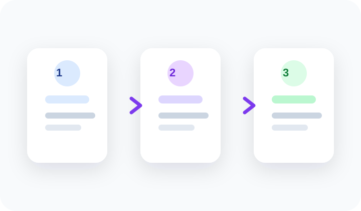

Problems
こんなお悩みはありませんか
手作業が積み重なるほど、確認漏れ・作業ミス・属人化が起こりやすくなります。
CSV加工に毎回時間がかかっている
店舗ごとに仕様が異なり、運用が複雑になっている
在庫更新や商品管理が手作業でミスが起きやすい
画像作成やリネームに工数がかかっている
何から効率化すべきか分からない
既存ツールやサブスクのコストを見直したい
Services
提供できること
CSV加工・データ整形の自動化
フォーマット変換や加工処理をスクリプト化。毎回の手作業をなくします。
在庫更新・商品管理の効率化
モール間の在庫連携や一括更新処理を自動化し、ミスを減らします。
画像制作フローの改善
Adobe製品を活用したテンプレート化で、制作時間を短縮します。
画像の一括処理・リネーム
大量の画像ファイルのサイズ変換・名前変換を自動化します。
Web操作・スクレイピングの自動化
定型的なWeb作業を自動実行。繰り返し業務を省力化します。
社内向けツールの作成
現場の使いやすさを重視した、実務に合ったツールを制作します。
作業手順の整理・テンプレート化
属人化している作業を整理し、引き継ぎやすくします。
業務整理・改善提案
どこをどう改善すべきか、現場目線で整理・提案します。
既存コストやサブスクの見直し
使っていないツールや代替手段を検討し、コスト削減につなげます。
Results
実績・対応例
受賞
楽天 受賞実績
楽天市場にてショップ賞を受賞。日々の運営品質が評価されました。
受賞
Yahoo!ショッピング エリア賞
地域エリア部門での受賞経験あり。継続的な運営改善の成果です。
商品画像の一括作成ツール
大量商品の画像をルールに従って自動生成・保存するツールを開発。制作工数を大幅に削減しました。
商品在庫更新の自動化
手作業で行っていた在庫データの更新を自動化。ミスの削減と作業時間の短縮を実現しました。
スクレイピング・Web操作の自動化
定期的なデータ収集や画面操作を自動化。人手に頼っていた繰り返し作業を省力化しました。
楽天メルマガ作成ツールの開発
HTMLを直接触らなくても直感的なUIで作成・編集でき、最終的にHTMLとして書き出せるツールを制作しました。
Flow Design
業務整理から始めるので、無駄な開発になりにくいです
いきなりツールを作るのではなく、困りごとを整理し、優先順位を付けてから着手します。 必要なところだけを改善対象にすることで、現場に定着しやすい形を目指します。
- 課題の見える化
- 改善対象の優先順位付け
- 現場に合わせた最小構成でスタート

Scope
対応範囲
Flow
ご相談から導入までの流れ
1
お問い合わせ
フォームまたはメールでお気軽にご連絡ください。
2
ヒアリング
現在の業務内容や困りごとを丁寧にお聞きします。
3
困りごとをリスト化
ヒアリング内容をもとに課題を整理・可視化します。
4
対応内容の整理
効率化できること・できないことを明確にします。
5
優先順位を決定
効果が高い順に取り組む順序を一緒に決めます。
6
作成内容を選定
具体的な対応内容を確定します。
7
お見積もり
内容に応じた費用を明確にご提示します。
8
ご納得後に開発開始
合意いただけた段階で正式に着手します。
Pricing
料金について
初回相談は無料です
まずは困りごとを整理し、改善できる内容を見極めたうえで費用をご提示します。強引な勧誘は一切行いません。
✓
初回相談は無料
まずはお気軽にご相談ください。
✓
ヒアリング後にお見積もり
内容を整理したうえで費用をご提示します。
✓
ご納得いただけた場合のみ正式依頼
見積もりに合意いただけた段階で着手します。
About
自己紹介
村上
EC運営 / 改善提案 / 自動化支援
ネットショップ運営に11年間携わってきました。
これまでに Amazon、楽天、Yahoo!ショッピング、Qoo10、ポンパレモールなど、さまざまなEC店舗の運営に関わってきました。商品管理、画像制作、データ処理、業務改善など、カスタマーサポート以外の幅広いEC業務に対応してきた経験があります。
楽天での受賞実績や Yahoo!ショッピングでのエリア賞受賞経験もあり、日々の運営業務だけでなく、成果につながる現場感覚を踏まえたご提案が可能です。
現場での実務経験があるからこそ、どこを効率化すべきか、どういう形なら実際に使いやすいかを具体的にイメージしながらご提案できます。
わりとラフで話しやすいタイプなので、要件が固まっていない段階でもお気軽にご相談ください。親身に業務を整理し、状況に合わせて柔軟に対応いたします。
普段使っているツール
FAQ
よくある質問
はい、初回相談は無料です。まずは現状の課題整理から対応します。
はい、可能です。小規模な改善や一部業務の効率化も歓迎です。
ヒアリング後にお見積もりを作成し、ご納得いただけた段階で正式決定となります。
はい、可能です。実務に合わせた柔軟な対応を行っています。
一定期間内の軽微な修正は無料で対応可能です。継続的な調整やメンテナンスは別途対応となります。
Contact
お問い合わせ
初回相談は無料です。要件が固まっていなくても構いません。まずはお気軽にご連絡ください。
通常2〜3営業日以内にご返信いたします。